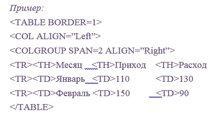

Элементы THEAD, TFOOT, TBODY
Для группировки строк таблицы применяются элементы THEAD, TFOOT и TBODY. При этом одна таблица может содержать только по одному элементу THEAD и TFOOT, и произвольное количество TBODY. Каждый элемент группы строк должен содержать хотя бы по одному элементу TR.
Закрывающий тег: опционально.
Собственные атрибуты:
ALIGN – Отменен. Указывает выравнивание в окне браузера. Может принимать следующие значения:
- • Center – выравнивание по центру.
- • Left – выравнивает по левому краю (принято по умолчанию).
- • Right – выравнивает по правому краю.
- • Char – текст выравнивается относительно указанного символа (устаревшее свойство).
VALIGN – определяет выравнивание по вертикали в ячейках группы строк:
- • Top – выравнивание по верхнему краю ячейки.
- • Middle – выравнивание по центру ячейки.
- • Bottom – выравнивание по нижнему краю ячейки.
Элементы COL и COLGROUP
Эти элементы позволяют легко манипулировать форматированием столбцов таблиц. С их помощью вы можете задать, например, выравнивание сразу для всех ячеек столбца. При этом элемент COL задает форматирование конкретной колонки, а элемент COLGROUP – объединяет несколько колонок в одну группу.

В данном примере строится таблица из трех колонок («Месяц», «Приход» и «Расход»). Мы определили выравнивание для первой колонки («Месяц») по левому краю, а для колонок 2 и 3 («Приход» и «Расход») – по правому.
Закрывающий тег: опционально.
Собственные атрибуты:
SPAN – указывает количество столбцов в группе.
WIDTH – определяет ширину столбца (для COL) или столбцов в группе (для COLGROUP).
ALIGN – Отменен. Указывает выравнивание в окне браузера. Может принимать следующие значения:
- Center – выравнивание по центру.
- Left – выравнивает по левому краю (принято по умолчанию).
- • Right – выравнивает по правому краю.
- • Char – текст выравнивается относительно указанного символа (устаревшее свойство).
- • Justify – текст выравнивается по ширине ячейки.
VALIGN – определяет выравнивание по вертикали в ячейках группы строк:
- • Top – выравнивание по верхнему краю ячейки.
- • Middle – выравнивание по центру ячейки.
- • Bottom – выравнивание по нижнему краю ячейки.